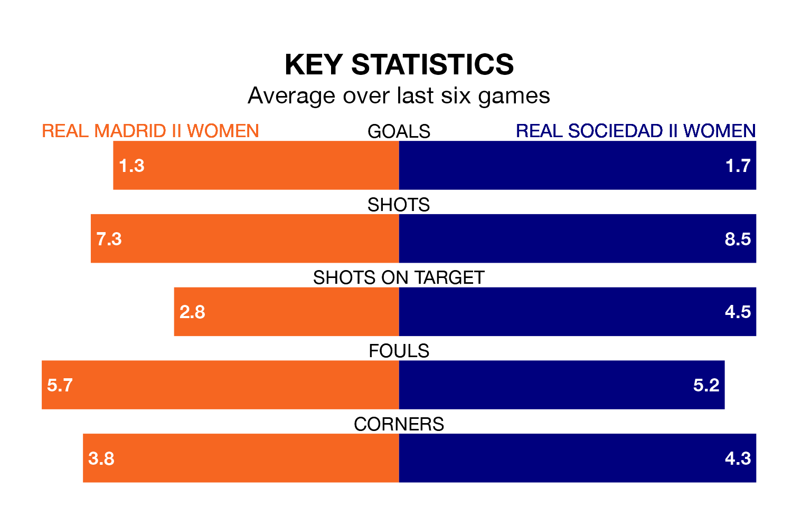

Real Madrid II Women host Real Sociedad II Women in Sunday's match looking to bounce back from defeat last time out in Segunda Federación Femenina.
Madrid II Women, who sit top of the league after 16 games, fell to a 1-0 away defeat to Rayo Vallecano Women on January 14.
They face a Sociedad II Women side who secured a draw in their last match, a 0-0 tie with Atlético Madrid III Women, and who sit 13th in the table.
With 25 goals in 16 games so far this season, Madrid II Women are scoring more than average in the league with 1.6 goals per game. And they are conceding fewer than average, letting in nine goals at a rate of 0.6 per game.
Sociedad II Women, meanwhile, are below average scorers, with 1.1 goals per game, compared to a league average of 1.3. They have conceded 0.8 goals per game.
The hosts are in good form in Segunda Federación Femenina, with four wins and a draw from their last six games.
And also with four wins and a draw over that period, the away side's form is identical – they have both taken 13 points from 18.
Updated: 06:13 (UTC), 18/01/24